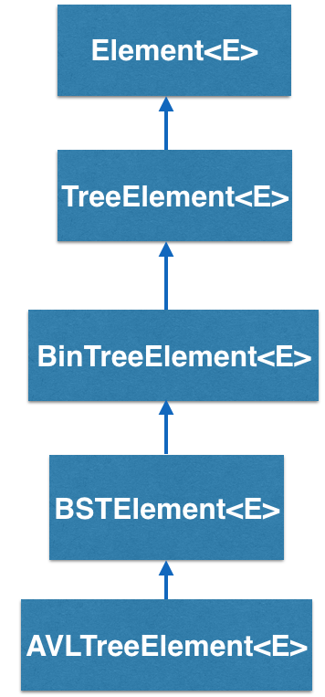
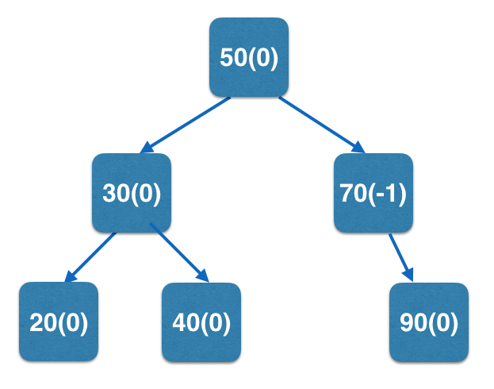

How does the AVLTreeElement<K,E> work?
AVLTreeElement<K,E> is nearly identical to BSTElement<K,E>, however, it is to be used for building AVL trees, a type of balanced binary search trees (Other examples of balanced search trees include Red-Black Trees, 2-3 Trees). AVL tree inherits all data members and methods of a BSTElement<K,E>, but includes two additional attributes: a balance factor, which represents the difference between the heights of its left and right subtrees, and height, that keeps track of the height of the tree at the node.
An example AVL tree is shown below (and used in the live example further down)
with key values and balance factors(in parens):

AVL Tree - BRIDGES Example
Example Details
- This example illustrates construction of an AVL tree, whose elements derived from BST elements.
- AVL tree elements have balance factors in order to maintain a balanced tree.
- In this example, a simple AVL tree is built and visualized. Hit the `l' button to see the labels, which display balance factors at each node. and visualized.
Java
C++
Python
Bridges Visualization
- Once all your code is in order, run your program.
- Assuming all your code is correct and it compiles correctly, a link to the Bridges website will be generated.
- Copy/paste this link into your favorite browser to view a visualization of the data structure you’ve just created.
- It should look something like this; mouse over the nodes or hit 'l' to turn on the labels. You will see the balance factors for each node.
Well done! You’ve just created an AVL Tree!